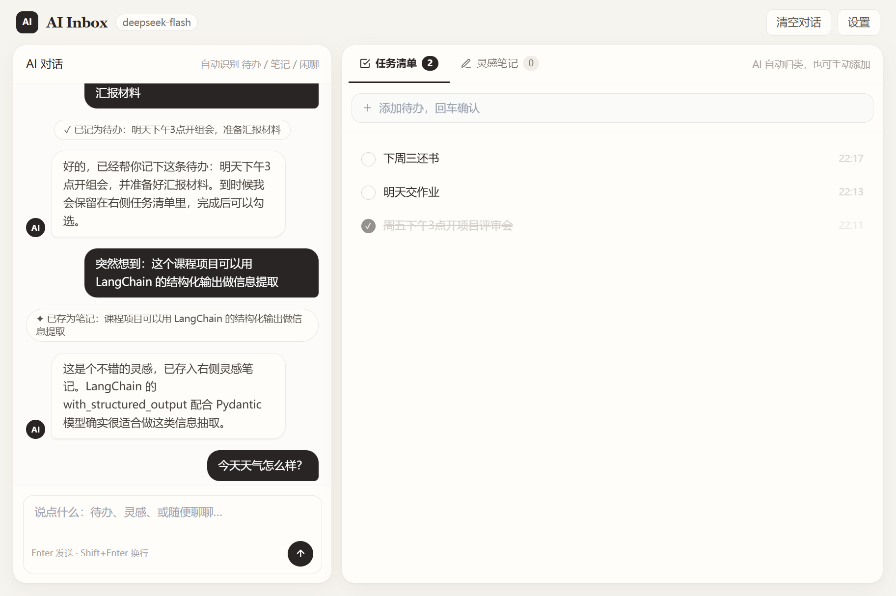
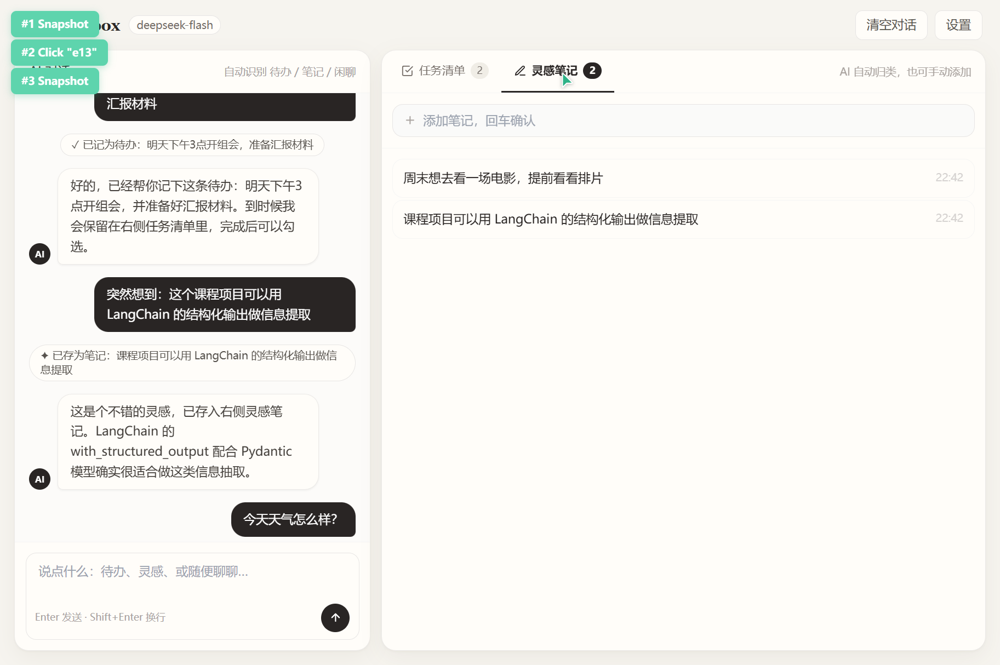

AI Inbox（个人智能收件箱）是一个"想到什么就说什么"的信息收纳工具。用户在一个对话框里随意输入——可以是待办事项、一闪而过的灵感，或纯粹一句闲聊——系统在后台自动完成三件事： 理解语义 → 结构化提取 → 分类入库。
项目严格遵循"纯云端 LLM + 极简工程"的约束：不使用任何本地模型，不引入 Vue/React 等前端框架，仅用 FastAPI + LangChain + SQLite + 单文件原生 HTML 完成全部功能。核心价值在于用 LangChain 的 with_structured_output 能力，把非结构化的自然语言可靠地转换为可存储、可管理的结构化数据。
产品形态围绕"一个大输入框"展开，功能按「对话区」与「数据管理区」两条线设计：
| 功能模块 | 功能点 | 说明 |
|---|---|---|
| 智能对话 | 流式回复 | SSE（Server-Sent Events）协议逐字输出，带打字动画 |
| 语义三分类 | 待办 / 笔记 / 闲聊，闲聊只回复不入库，避免"说什么都记录" | |
| 提取状态条 | 对话流内实时显示「✓ 已记为待办 / ✦ 已存为笔记 / 闲聊 · 不记录」 | |
| 对话持久化 | 全部消息存入 SQLite，刷新不丢失，支持一键清空 | |
| 任务清单 | AI 自动捕获 | 从对话中提取待办，去除语气词冗余（"帮我记一下明天买牛奶" → "明天买牛奶"） |
| 手动增删改 | 输入框回车快速添加；行内编辑（双击）；两步点击删除确认 | |
| 完成切换 | 圆形勾选切换完成态，完成项置灰划线并沉底 | |
| 未完成计数 | 标签页徽章实时显示未完成数量 | |
| 灵感笔记 | AI 自动捕获 | 识别对话中有记录价值的信息（想法、灵感、备忘） |
| 手动增删改 | 与任务清单一致的手动管理能力 | |
| 卡片式展示 | 纸质感卡片列表，带时间戳 | |
| 系统设置 | 模型热配置 | 页内设置面板配置 API Key / Base URL / 模型名，保存即生效，无需重启 |
系统采用经典的前后端同构单体架构：FastAPI 同时承担 API 服务与静态文件托管，前端为单文件原生 HTML，数据层使用 SQLite 内嵌数据库，LLM 调用通过 OpenAI SDK 兼容协议访问云端模型。
flowchart LR
subgraph Browser["浏览器（static/index.html）"]
UI["原生 JS + Tailwind CDN
聊天界面 / 清单面板 / 设置"]
end
subgraph Server["FastAPI（main.py）"]
API["REST API 层
/api/chat · /api/data · /api/settings"]
CHAIN["LangChain 提取链（llm_chain.py）
with_structured_output"]
end
subgraph Cloud["云端大模型"]
LLM["ChatOpenAI
DeepSeek / GPT（OpenAI 兼容协议）"]
end
subgraph Storage["本地存储"]
DB[("SQLite（database.py）
todos · notes · messages · settings")]
end
UI -- "Fetch / SSE" --> API
API --> CHAIN
CHAIN -- "结构化提取" --> LLM
API -- "读写" --> DB
API -- "静态文件挂载" --> UI
| 分层 | 技术选型 | 职责 |
|---|---|---|
| 前端展示 | 原生 HTML/JS + Tailwind CDN | 单文件界面，Fetch API 交互，SSE 流式渲染 |
| 接口服务 | FastAPI + Uvicorn | REST API、SSE 流式响应、静态文件托管 |
| 智能层 | LangChain + langchain-openai | 结构化提取链，Pydantic 约束输出 |
| 大模型 | DeepSeek（OpenAI 兼容） | 纯云端推理，无本地模型 |
| 数据持久化 | SQLite3（Python 内置） | todos / notes / messages / settings 四张表 |
| 配置管理 | python-dotenv + DB 设置表 | .env 兜底，页内设置热更新优先 |
一次对话输入的处理链路是本项目最核心的设计。它把"结构化提取"与"流式对话"两条链路合并为一次请求，先判定语义类型并入库，再基于提取结果生成流式回复：
sequenceDiagram
participant U as 用户
participant F as 前端 index.html
participant B as FastAPI /api/chat
participant L as LangChain 提取链
participant M as 云端大模型
participant D as SQLite
U->>F: 输入一段话，回车发送
F->>B: POST /api/chat（SSE）
B->>L: extract_info(text)
L->>M: Prompt + JSON Schema 约束
M-->>L: ExtractedData(type, content)
L-->>B: 结构化结果
alt type = todo
B->>D: INSERT INTO todos
else type = note
B->>D: INSERT INTO notes
else type = chat
B-->>B: 不入库，仅对话
end
B->>D: 保存用户消息 + 提取事件
B-->>F: SSE: {"event":"extracted", ...}
F->>F: 显示提取状态条
loop 流式生成
B->>M: llm.stream(上下文 + 提取结果)
M-->>B: token 增量
B-->>F: SSE: {"event":"delta", "text":"..."}
F->>F: 气泡逐字填充
end
B->>D: 保存 AI 回复
F->>B: GET /api/data 刷新右侧清单
界面采用暖白纸质感设计：米白底色、纸白卡片、暖灰文字，全程黑白灰三色、无任何彩色装饰，风格克制干净。布局为「左对话 + 右清单」双卡片结构，右卡片内以标签页切换任务清单与灵感笔记。


prompt/confirm 的嵌入式浏览器环境。
用 Literal 将输出约束为三个互斥类型，配合字段级 description 提示模型如何清洗内容——这是"说话不必正式，记录自动整洁"的关键：
from typing import Literal from pydantic import BaseModel, Field class ExtractedData(BaseModel): """从用户输入中提取出的结构化信息""" type: Literal["todo", "note", "chat"] = Field( description="信息类型：todo=待办任务；note=值得记录的想法/信息；chat=纯闲聊提问（不记录）" ) content: str = Field( description="提取的核心内容，去除语气词和冗余，如'帮我记一下明天要买牛奶'→'明天买牛奶'；chat 类型给空字符串" ) structured_llm = llm.with_structured_output(ExtractedData)
后端以 StreamingResponse 推送标准 SSE 事件流，先发extracted事件驱动状态条，再逐 token 推送delta，协议结构化、可扩展：
def generate(): yield _sse({"event": "extracted", "type": result.type, "content": result.content}) reply = "" for chunk in stream_reply(text, result, history): reply += chunk yield _sse({"event": "delta", "text": chunk}) if reply.strip(): database.add_message("assistant", reply) yield _sse({"event": "done"}) return StreamingResponse(generate(), media_type="text/event-stream")
模型配置存于 SQLite settings 表，读取时数据库优先、.env 兜底；保存后重建提取链即时生效，配合页内设置面板实现"不改代码、不重启服务"切换模型。
开发过程中对关键路径做了系统性的接口实测与浏览器端到端验证：
| 测试项 | 输入 / 操作 | 预期结果 | 实测 |
|---|---|---|---|
| 待办提取 | "帮我记一下明天要买牛奶" | 入库 todo："明天买牛奶" | 通过 |
| 笔记提取 | "这个产品可以用区块链重新做一遍" | 入库 note | 通过 |
| 闲聊不记录 | "你能帮我做什么" | type=chat，清单无新增，正常回复 | 通过 |
| 流式输出 | 任意输入 | SSE 依次返回 extracted → delta×N → done | 通过 |
| 对话持久化 | 发送消息后刷新页面 | 气泡与状态条从数据库完整恢复 | 通过 |
| 手动管理 | 增删改、完成切换 | 列表实时刷新，计数徽章同步 | 通过 |
| 异常兜底 | 空输入 / 未配置 Key / 网络异常 | 400 / 502 + 中文提示，无裸堆栈 | 通过 |
| UI 兼容 | 禁用原生弹窗的环境 | 行内编辑、两步确认、toast 全可用 | 通过 |
pip install -r requirements.txt.env.example 为 .env，填入 OPENAI_API_KEY（也可启动后在页面右上角"设置"中填写，保存即生效）uvicorn main:app --reloadhttp://127.0.0.1:8000/# .env 配置示例
OPENAI_API_KEY=sk-xxxxxxxxxxxxxxxx
OPENAI_BASE_URL=https://api.deepseek.com/v1
MODEL_NAME=deepseek-chat
本项目以约七百行代码完成了一个端到端可用的 AI 信息收纳工具：LangChain 结构化输出解决了"自然语言 → 结构化数据"的可靠性问题，SSE 流式协议保证了对话体验，SQLite 持久化让数据可积累、可管理，极简前端则把维护成本压到最低。
可扩展方向：
① 待办增加截止时间字段，由 LLM 一并抽取并支持到期提醒；
② 引入 LangChain Retrieval，对历史笔记做语义检索与"回忆"问答；
③ 增加多用户与登录，SQLite 平滑迁移至 PostgreSQL。